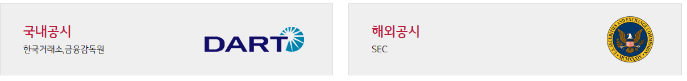

공시정보

LG디스플레이㈜ 공시정보관리규정
제 정 : 2009.8.31
제1조 (목적)
이 규정은 당사의 공시정보가 관련법규에 따라 적기에 공시될 수 있도록 함과 아울러임직원의 불공정거래를
방지하기 위하여 공시관련 업무 및 절차, 공시정보의 관리 등에 필요한 사항을 정함을 목적으로 한다.
제2조 (적용범위)
공시업무의 수행 및 공시정보의 관리에 관한 사항은 법령, 관련규정
또는 정관에 정하여진 것을 제외하고는 이 규정이 정하는 바에 의한다.
제3조 (용어의 정의)
1. “공시정보”라 함은 당사의 경영 및 재산 등에 관하여 투자자의 투자판단에 영향을 미칠 수 있는 사항으로 자본시장과 금융투자업에 관한 법률(이하 “법”이라
한다) 및 법 시행령(이하 “영”이라 한다), 금융위원회(이하 “금융위”라 한다)의 증권의 발행 및 공시 등에 관한 규정(이하 “발행공시규정”이라 한다),
한국거래소(이하 “거래소”라 한다)의 유가증권시장 공시규정(이하 “공시규정”이라 한다), U.S. Securities and Exchange Commission(이하 “SEC”라 한다)의
THE SECURITIES EXCHANGE ACT OF 1934(이하 “SEC Rule”이라 한다) 등 관련 법규에서 정하고 있는 공시사항 및 그와 관련된 정보를 말한다.
2. “공시서류”라 함은 공시정보의 공시를 위하여 제출한 신고 및 보고서류(전자문서포함)와 이에 첨부된 서류를 말한다.
3. “공시통제제도”라 함은 공시정보를 당사 내부의 관련 조직에서 일정한 통제절차에 따라 관리해 나가는 제반 업무활동을 말한다.
4. “공시통제조직”이라 함은 이 규정에 의해 공시정보의 생성, 수집, 검토, 공시서류의 작성, 승인 등 공시와 관련된 업무를 수행하는 공시책임자, 공시담당부서 및 공시정보의 생성과 관련된 공시관련부서를 의미한다.
5. “공시책임자”라 함은 대표이사 또는 CFO의 지명을 받아 당사의 공시업무를 실질적으로
총괄하는 자로 공시규정 제88조 제1항에 따라 공시책임자로 거래소에 등록된 자를 말한다.
6. “공시담당부서”라 함은 당사의 업무 및 직제 규정에 의거 당사의 공시업무를 담당하는 부서를 말한다. 이 경우 공시담당부서에는 공시규정 제88조 제2항에
따라 거래소에 등록된 “공시담당자” 2인 이상이 소속되어야 한다.
7. “공시관련부서”라 함은 금융담당, 법무담당, 업무홍보담당, IR담당, 전략담당, 경영기획담당, 회계담당 등 당사의 공시정보의 발생과 관련된 업무를 수행하는
부서를 말한다.
8. “정기공시”라 함은 당사의 사업ㆍ재무상황 및 경영실적 등 기업내용 전반에 관한 사항을 법 제159조, 제160조, 제165조, 영 제168조, 제170조,
발행공시규정 제4-3조, 공시규정 제21조에 따라 금융위 또는 거래소에 사업보고서, 반기보고서, 분기보고서를 제출하거나 미국 SEC Rule에 따라 미국 SEC에
관련 보고서(Form 20-F)를 제출하는 것을 말한다.
9. “수시공시”라 함은 주요경영사항의 공시로서 당사의 경영활동과 관련하여 투자 의사결정에 영향을 미치는 주요 사실 또는 결정내용 등을 공시규정 제7조에
따라 거래소에 신고 또는 공시하는 것을 말한다.
10. “공정공시”라 함은 당사가 관련법규상 공시의무 대상이 되지 않는 정보나 공시시한이 도래하지 않은 정보 등을 특정인에게 선별 제공하는 경우 공시규정 제15조 및 제16조와 거래소의 공정공시운영기준에 따라 당해 정보를 일반투자자가 동시에(또는 특정인에 대한 선별제공 전까지) 알 수 있도록 거래소에 공시하는 것을 말한다.
11. “조회공시”라 함은 당사와 관련한 풍문 및 보도의 사실여부 확인이나 중요정보의 유무에 대하여 공시규정 제12조에 의거 거래소로부터 요청받아 공시하는 것을 말한다.
12. “자율공시”라 함은 당사가 제9항의 수시공시사항 이외에 회사의 경영ㆍ재산 및 투자자의 투자판단에 중대한 영향을 미칠 수 있다고 판단하거나 공시의무 대상이 되지 않은 정보 등에 대한 공시가 필요하다고 판단하는 경우 공시규정 제28조 및 동시행세칙 제8조에 따라 거래소에 공시하는 것을 말한다.
13. “발행공시 및 주요사항보고”라 함은 관련법규상 증권의 모집ㆍ매출이나 합병, 분할, 영업양수도 등 당사의 조직변경이나 자기주식의 취득ㆍ처분 등에 관한 사항을 법 제119조, 제121조 내지 제123조, 제130조, 제161조, 영 제120조 내지 제122조, 제137조, 제171조, 발행공시규정 제2-4조, 제2-6조, 제2-14조, 제2-17조, 제4-5조, 제5-8조 내지 제5-10조, 제5-15조에 따라 금융위에 관련 신고서를 제출하거나 미국 SEC Rule에 따라 SEC에 관련 신고서를 제출하는 것을 말한다.
14. “Form 6-K”라 함은 국내에서 이루어지는 모든 공시에 대해서 SEC에 공시하는 것을 말한다.
15. 이 규정에서 사용하는 용어에 관하여는 이 규정에서 특별히 정하는 경우를 제외하고는 관련 법령과 규정에서 사용하는 용어의 예에 의한다.
제4조 (권한 및 책임)
1. 공시책임자
1) 공시책임자는 대표이사 또는 CFO가 지명한다.
2) 공시책임자는 공시통제제도의 설계 및 운영에 관련된 업무를 총괄하며 다음 각호의 업무를 수행한다.
① 공시정보 및 공시서류(관련 서류를 포함한다. 이하 같다)에 대한 검토ㆍ승인ㆍ시행에 관한 업무
② 임직원의 공시관련법규의 준수를 위해 필요한 조치(관련 교육실시, 지침의 마련 등)
③ 공시위험요인에 대한 식별과 대처방안 수립ㆍ실행
④ 관련법규에서 공시하도록 명시적으로 특정하지 않은 사항에 대한 공시여부 및 범위의 결정
⑤ 공시담당부서의 지휘 및 감독
3) 공시책임자는 그 직무를 수행함에 있어 필요한 경우 다음 각호의 권한을 가진다.
① 공시사항과 관련된 각종 장부 및 기록에 대한 제출요구 및 열람권
② 회계부서 또는 공시정보 생성 및 공시서류 작성과 관련 있는 부서의 임직원에 대한 의견 청취권
4) 공시책임자는 그 직무를 수행함에 있어 필요한 경우 담당임원과 협의할 수 있으며, 외부전문가의 의견을 청취할 수 있다.
2. 공시담당부서
1) 대표이사 또는 CFO는 공시업무에 관한 전문적 지식을 갖춘 자를 포함하여 공시업무를 담당하는 부서를 구성하여야 하며 이 중 2인을 공시규정 제88조 제2항에 따라 공시담당자로 지명하여야 한다.
2) 공시담당부서는 공시업무와 관련하여 공시책임자의 지휘를 받으며 다음 각호의 업무를 수행한다.
① 각종 공시정보의 수집 및 검토
② 공시서류의 작성 및 공시실행
③ 연간 공시업무계획의 수립 및 추진현황 점검
④ 공시관련 법규의 제ㆍ개정내용에 대한 수시점검 등 법규준수를 위해 필요한 조치의 검토 및 공시책임자에 대한 보고
⑤ 회사 전체적인 차원에서의 공시위험의 식별, 점검, 평가, 관리
⑥ 기타 대표이사, CFO 또는 공시책임자가 필요하다고 인정하는 사항
3. 공시관련부서
1) 각 공시관련부서팀장은 다음 각호의 1에 해당하는 경우에는 공시담당부서에 적시에 이에 관한 정보를 전달하여야 한다.
① 공시관련법규에서 정한 공시사항이 발생하거나 발생이 예상되는 경우
② 회사의 경영에 중대한 영향을 미치는 사항으로서 공시여부에 대한 판단이 불분명한 경우
③ 이미 공시된 사항의 취소 또는 변경사유가 발생하거나 발생이 예상되는 경우
④ 기타 공시책임자 또는 공시담당부서팀장의 요구를 받은 경우
2) 각 공시관련부서팀장은 전항의 공시정보를 전달하는 경우 관련 내용과 필요한 증빙 및 참고자료 등에 관한 사본을 문서로 공시담당부서로 전달하고 이에 관한 원본을 보관하여야 한다. 다만, 긴급을 요하거나 불가피한 사유가 있는 경우에는 문서 외의 적정한 방법으로 전달하되 사후에 관련 내용의 사본을 문서로 전달할 수 있다.
제5조 (공시통제활동과 운영)
1. 정기공시
1) 회사는 정기공시서류를 작성하여 공시시한 내에 금융위, 거래소 및 SEC에 제출하여야 한다.
2) 공시담당부서팀장은 정기공시사항의 공시실행을 위하여 공시사항과 공시일정 등을 확인하고 공시관련부서별 업무분장을 포함한 연간 공시업무계획을 수립하여야 한다.
3) 공시담당부서팀장은 각 공시관련부서에서 전달받은 내용 등을 종합하여 관련법규에서 정한 서식 및 기재방법에 따라 정기공시서류를 작성하여 공시책임자에게 제출하여야 한다.
4) 공시담당부서팀장은 공시책임자와 대표이사의 승인을 얻어 법정제출기한 내에 정기공시를 실행하여야 한다. 이 경우 관련법규에 따라 대표이사 등의 인증이 필요한 경우에는 당해 인증을 첨부하여야 한다.
5) 공시책임자는 공시담당부서팀장으로부터 제출받은 정기공시서류가 관련법규에 따라 적정하게 작성되었는지 여부와 당해 정기공시서류를 통해 공시되는 정보의 정확성, 완전성 등에 대하여 검토하고 이를 대표이사에게 보고하여야 하며 대표이사의 승인을 얻어 공시담당부서팀장에게 공시를 실행하도록 하여야 한다.
6) 대표이사는 공시책임자로부터 보고받은 정기공시서류의 적정성 등에 대하여 직접 확인 검토 후 승인하여야 하며 관련법규상 필요한 인증을 하여야 한다.
7) 정기공시서류 작성에 관련된 공시관련부서와 공시담당부서팀장은 공시 후 즉시 당해 공시내용의 적정여부를 점검하여야 하며, 공시담당부서팀장은 점검결과 기재오류나 누락 등이 있는 경우 이를 즉시 시정하기 위한 정정공시 등 필요한 조치를 취하여야 한다.
2. 수시공시
1) 회사는 수시공시서류를 작성하여 공시시한 내에 거래소에 제출하여야 한다.
2) 공시관련부서는 수시공시사항이 발생하거나 발생이 예상되는 경우와 이미 수시공시된 내용의 취소 또는 변경사유가 발생되거나 발생이 예상되는 경우 즉시 이에 관한 정보를 공시담당부서에 전달하여야 하며 공시담당부서팀장으로부터 제1항의 정보에 대한 보완 또는 추가자료의 제출 등을 요구받은 경우 즉시 이에 응하여야 한다.
3) 공시담당부서는 공시관련부서로부터 수시공시사항 등에 관한 정보를 전달받은 경우 즉시 당해 정보가 공시사항에 해당하는지 여부에 대한 검토와 정보의 정확성, 완전성 등을 검토하여야 한다. 공시담당부서팀장은 필요한 경우 당해 공시관련부서에 정보의 보완이나 추가자료의 제출을 요구할 수 있다.
4) 공시담당부서팀장은 전항의 검토결과 수시공시사항에 해당하는 경우에는 당해 정보에 대한 검토내용과 수시공시서류를 작성하여 공시책임자에게 보고하여야 하며, 공시 책임자의 승인을 얻어 관련법규에 정한 공시방법에 따라 공시를 실행하여야 한다. 다만, 공시책임자의 부재 등 공시책임자의 승인을 받기 어려운 경우에는 공시담당부서팀장이 공시를 실행할 수 있고, 이 경우 사후에 공시책임자에게 이를 보고하여야 한다.
5) 공시담당부서팀장은 수시공시사항이 독점규제 및 공정거래에 관한 법률 제11조의2에 따른 대규모내부거래에 대한 공시에 해당하는지 여부를 검토하여 공시를 실행하여야 한다.
6) 공시책임자는 제4항의 검토내용과 공시서류 등이 관련법규에 따라 적정하게 작성되었는지 여부 등을 검토하고 공시여부에 대해 승인하여야 한다.
7) 1. 정기공시의 제7항의 규정은 수시공시에 관하여 이를 준용한다.
3. 공정공시
1) 회사는 공정공시서류를 작성하여 공시시한 내에 거래소에 제출하여야 한다.
2) 공정공시정보제공자(공시규정 제15조 제2항에서 정하는 자를 말한다)는 공정공시사항을 각종 비율 및 증감 규모 등을 통하여 공시 전에 우회적으로 공정공시정보제공대상자 (공시규정 제15조 제3항에서 정하는 자를 말한다)에게 제공하여서는 아니 된다.
3) 공정공시를 실행하는 경우에는 공정공시의 내용과 관련하여 상세한 정보를 알고자 하는 투자자의 문의가 용이하게 이루어질 수 있도록 공시책임자, 공시담당자, 당해 공정 공시대상정보와 관련이 있는 공시관련부서 및 연락처 등을 명시하여야 한다. 또한 거래소로부터 요청이 있는 경우에는 공정공시요약내용과 홈페이지 주소를 기재하여 거래소에 공시를 실행하고 당해 요약내용과 원문은 당사의 홈페이지에 게재하여야 한다.
4) 1. 정기공시의 제7항, 2. 수시공시의 제2항의 규정은 공정공시에 관하여 이를 준용한다.
4. 조회공시
1) 회사는 조회공시서류를 작성하여 공시시한 내에 거래소에 제출하여야 한다.
2) 공시담당부서팀장은 거래소로부터 조회공시 요구를 받은 경우에는 즉시 사실 여부 및 중요정보의 유무 등을 확인하고 공시서류를 작성하여 공시책임자의 승인을 얻어 조회 공시에 응하여야 한다. 또한 공시담당부서팀장은 사실여부나 중요정보의 유무 확인을 위해 각 공시관련부서에 자료 제출이나 의견의 진술을 요청할 수 있으며, 이 경우 당해 공시관련부서는 이에 응하여야 한다.
3) 공시담당부서팀장은 조회공시를 요구받은 경우 의사결정 과정중에 있다는 내용으로 공시(이하 ‘미확정 공시’라 한다)한 경우에는 당해 공시사항에 대한 확정내용 또는 진척 상황을 파악하여 공시책임자의 승인을 얻어 미확정 공시일로부터 1월 이내에 재공시를 실행하여야 한다. 이 경우 1월 이내에 재공시의 실행이 사실상 불가능하다고 판단되는 경우에는 재공시 시한을 명시하여 공시를 실행하여야 한다.
4) 1. 정기공시의 제7항, 2. 수시공시의 제6항의 규정은 조회공시에 관하여 이를 준용한다.
5. 자율공시
1) 회사는 자율공시서류를 작성하여 필요시 공시시한 내에 거래소에 제출할 수 있다.
2) 공시책임자는 자율공시가 필요하다고 판단되는 사항이나 이미 자율공시한 내용의 취소 또는 변경사유가 발생되거나 발생이 예상되는 경우 공시담당부서팀장에게 필요한 정보의 수집 및 공시서류의 작성을 지시할 수 있다.
3) 공시담당부서팀장은 자율공시가 필요하다고 판단되는 사항이나 이미 자율공시한 내용의 취소 또는 변경사유가 발생하거나 발생이 예상되는 경우 또는 전항에 따른 공시책임자의 지시가 있는 경우 공시관련부서팀장에게 필요한 정보의 제공이나 자료의 제출을 요구할 수 있다.
4) 공시관련부서팀장은 자율공시가 필요하다고 판단되는 사항이나 이미 자율공시한 내용의 취소 또는 변경사유가 발생되거나 발생이 예상되는 경우 또는 전항의 규정에 따라 공시담당부서팀장으로부터 이와 관련하여 필요한 정보의 제공이나 자료의 제출을 요청받은 경우 즉시 이에 관한 정보나 자료를 문서로 공시담당부서에 전달하여야 한다.
5) 공시관련부서팀장은 공시담당부서팀장으로부터 전항의 통지내용에 대한 보완 또는 추가자료의 제출 등을 요구받은 경우에는 즉시 이에 응하여야 한다.
6) 1. 정기공시의 제7항, 2. 수시공시의 제3항, 제4항, 제5항, 제6항의 규정은 자율공시에 관하여 이를 준용한다.
6. 발행공시 및 주요사항보고
1) 회사는 발행공시 및 주요사항보고 서류를 작성하여 공시시한 내에 금융위 및 SEC에 제출하여야 한다.
2) 1. 정기공시 제5항, 제7항의 규정은 발행공시 및 전 항의 주요사항보고에 관하여 이를 준용한다.
3) 법 제161조 제1항 제1호 내지 제5호 및 제9호의 주요사항보고에 관하여는 2. 수시 공시의 제2항 내지 제7항을 준용한다.
7. Form 6-K
1) 회사는 국내에서 이루어지는 모든 공시에 대해서 SEC에 동일한 내용으로 공시서류를 제출하여야 한다. 다만 공시규정 및 SEC Rule이 적용되는 범위 내에서 국내외 경제상황, 회사의 경영환경에 따라 국내 공시내용의 일부를 축소 또는 보완하여 공시할 수 있다.
2) 공시의 작성 및 절차에 관한 사항은 제5조 1~6의 내용 중 관련 사항을 준용한다.
제6조 (공시위험의 평가와 관리)
1. 공시책임자는 공시정보의 정확성, 완전성, 공정성 및 적시성에 부정적인 영향을 미칠 수 있는 다음 각호의 공시위험이 적시에 점검되고 지속적으로 관리될 수 있도록 하여야 한다.
1) 재무정보 오류 : 회계처리상의 실수나 담당자간 의사소통의 불일치 등에 의해 야기되는 실제 재무상태와 공시내용과의 불일치 등으로 인한 공시위험
2) 서식기재의 미비, 기재오류 : 기재요령 등에 대한 이해부족, 오타 등으로 공시관련 서식상 요구되는 사항에 대한 기재누락 또는 오류로 인한 공시위험
3) 공시내용의 불명확성ㆍ불충분성ㆍ부정확성 : 일반인이 이해하기 힘든 전문용어ㆍ약어의 사용, 관련 내용에 대한 충분한 설명 부족, 실제 발생사실과 공시내용과의 불일치 등으로 인한 공시위험
4) 관련법규상의 공시기한 준수의무의 불이행 : 정보전달의 지연, 결재의 지연, 공시기한에 대한 오인 등으로 공시기한을 준수하지 못하는 경우의 공시위험
5) 공시사항의 누락ㆍ은폐ㆍ축소 : 공시의무사항을 이해하지 못한 공시누락이나, 회사 부정적인 정보 등에 대한 은폐ㆍ축소로 인한 공시위험
6) 예측정보의 공시에 따른 위험 : 예측정보가 합리적 근거나 가정에 기초하지 않았거나 고의의 허위기재, 중요한 사항의 누락 등으로 인한 공시위험
7) 미공개 정보의 유출 : 일반에 공개되지 않은 정보가 임직원에 의해 특정인에게 선별적으로 제공되는 등 비정상적인 경로를 통해 유출되는 경우의 공시위험
8) 공시제도의 변경에 따른 위험 : 공시관련법규의 변경, 정부정책의 변경, 회사가 속해 있는 거래소시장의 변경, 관련 감독기관 및 시장운영기관 등의 담당자 또는 실무 변경 등으로 인하여 발생할 수 있는 공시위험
9) 공시담당자의 변경 : 공시담당자의 변경에 따른 정보승계의 단절, 공시의무 이행의 계속성 상실 등으로 인하여 발생할 수 있는 공시위험
10) 기타 공시정보에 부정적인 영향을 미칠 수 있는 공시위험
2. 각 공시관련부서는 공시 관련업무의 수행과정에서 공시위험이 발생하거나 발생가능성이 있는 경우 이를 즉시 공시담당부서에 전달하고 공시책임자의 지시에 따라 공시위험이 발생하지 않도록 적절한 관리를 하여야 한다.
3. 공시담당부서는 회사 전체적인 차원에서 공시위험에 대한 점검 및 관리업무를 총괄하며, 공시담당부서팀장은 공시위험의 발생결과가 회사에 미치는 영향이 큰 주요한 공시위험을 별도로 분류하여 일별ㆍ월별 점검을 실시하는 등 적절한 점검 및 관리가 이루어지도록 하여야 한다.
제7조 (일상적 모니터링)
1. 공시관련부서 및 공시담당부서팀장과 공시책임자는 필요시 일상적 모니터링을 통해 공시관련 업무가 공시통제제도에 따라 처리되고 있는지 여부를 점검하고 취약점이 발견된 경우 적시에 시정ㆍ개선될 수 있도록 필요한 조치를 취하고, 사후에 조치의 이행여부를 확인하여야 한다.
2. 공시관련부서 및 공시담당부서팀장과 공시책임자는 일상적 모니터링을 위해 문서의 결재, 참고자료의 제출요구, 공시정보와 관련된 직원과의 면담, 회계담당부서 등의 의견을 청취할 수 있다.
제8조 (운영실태 점검 및 운영성과 평가)
1. 공시책임자는 필요시 다음의 사항을 고려하여 공시통제제도 운영실태를 점검하고 운영성과를 평가하여야 한다.
1) 당사가 설계ㆍ운영하고 있는 공시통제제도가 지속적이며 정확한 정보의 생산 및 공시위험의 감소에 기여하는지 여부
2) 당사의 공시통제제도에 부적법하거나 결함이 있는 부분이 있는지 여부
3) 재무 및 비재무정보의 정확성을 점검하기 위한 절차가 충분한지 여부
4) 당사의 공시사항에 대하여 충분한 사전검토와 사후점검이 이루어지고 있는지 여부
5) 당사의 공시통제과정에서 모든 관여자들이 그들의 책임을 이해하고 있는지 여부
6) 이전에 발생한 공시위험 및 주요한 공시위험에 대한 평가 및 관리가 적정하게 이루어지고 있는지 여부
2. 공시책임자는 공시통제제도에 대한 운영실태 점검 및 운영성과 평가를 통해 나타난 통제상의 취약점이 개선될 수 있도록 필요한 조치를 취하여야 하며, 전항의 조치가 이행되고 있는지 여부에 대하여 사후에 점검하여야 한다.
제9조 (임직원의 불공정거래 금지_미공개중요정보 이용 금지)
1. 임직원은 법 제174조 제1항에서 규정하는 업무 등과 관련된 미공개중요정보(이하‘미공개 중요정보’라 한다)를 법 제172조 제1항에서 규정하는 특정증권등(이하 ‘특정증권등’이라 한다)의 매매, 그 밖의 거래에 이용하거나 타인에게 이용하게 하여서는 아니 된다.
2. 대표이사, CFO 또는 공시책임자는 다음 각호에 따라 미공개 중요정보가 관리될 수 있도록 필요한 조치를 취하여야 한다.
1) 미공개중요정보를 포함하고 있는 문서는 허용된 임직원만이 사용할 수 있는 안전한 장소에 보관되어야 한다.
2) 임직원은 미공개중요정보를 엘리베이터, 복도 등 타인이 대화내용을 들을 수 있는 장소에서 논의하여서는 안된다.
3) 미공개중요정보를 포함하고 있는 문서는 공개적인 장소에 비치되어서는 안되며, 문서의 폐기시에는 분쇄 등 적절한 방법을 통해 문서의 내용을 파악할 수 없도록 폐기되어야 한다.
4) 임직원은 자신이 보유하고 있는 미공개중요정보를 외부뿐만 아니라 회사 내에서도 보안을 유지하여야 한다.
5) 미공개중요정보와 관련한 팩스, 컴퓨터 통신 등에 의한 문서의 전자송신은 보안이 보장된 상태에서만 수행되어야 한다.
6) 미공개중요정보를 포함하고 있는 문서의 불필요한 복사는 가급적 피하고 문서는 회의실 또는 업무 관련 장소에서 신속히 정리되어야 한다.
7) 미공개중요정보를 포함하고 있는 문서 사본의 여분은 분쇄 등의 방법으로 완전하게 파기하여야 한다.
3. 임직원은 회사의 미공개중요정보를 누설하여서는 아니 된다. 다만, 거래의 상대방, 법률대리인, 외부감사인 등과 업무상 불가피하게 미공개중요정보를 공유하게 되는 경우, 사전에 공시책임자 또는 공시담당부서팀장 등에게 문의하여 필요한 한도 내에서만 공유토록 하여야 한다.
4. 임직원이 의도하지 않은 상태에서 미공개중요정보를 누설한 경우에는 지체 없이 공시담당부서팀장에게 이 사실을 통지하여야 한다.
5. 전 항의 통지를 받은 공시담당부서팀장은 당해 사실을 공시책임자에게 보고하고 그 지시를 받아 공정공시 등 필요한 조치를 하여야 한다.
6. 임직원에 대한 당사의 계열회사의 미공개중요정보의 이용행위 금지에 관하여는 제1항 내지 제5항을 준용한다.
제10조 (임직원의 불공정거래 금지_단기매매차익의 반환)
1. 당사의 임원과 전략담당, 금융담당, 회계담당, IR담당, 법무담당, 경영기획담당, 사업부 기획관리담당, 홍보팀 및 CTO 산하 직원은 특정증권등을 매수한 후 6월 이내에 매도하거나 매도한 후 6월 이내에 매수하여 이익을 얻은 경우에는 법 제172조의 규정에 의하여 그 이익을 당사에 반환하여야 한다.
2. 공시담당부서팀장은 당사의 주주(주권 외에 지분증권 또는 증권예탁증권을 소유한 자를 포함한다. 이하 이 조에서 같다)로부터 당사가 단기매매차익거래를 한 임직원에 대해 그 이익의 반환청구를 하도록 요청받은 경우에는 이를 공시책임자에게 보고하여야 한다.
3. 공시책임자는 전항의 요청을 받은 날로부터 2월 이내에 해당 임직원에 대해 당해 이익을 반환받기 위해 필요한 절차를 진행하여야 한다.
4. 공시책임자는 증권선물위원회(이하 “증선위”라 한다)로부터 단기매매차익 발생사실을 통지를 받은 날로부터 2년간 다음 각 호의 사항이 지체 없이 당사의 홈페이지에 공시되도록 하여야 한다. 다만, 단기매매차익을 반환받은 경우에는 그러하지 아니하다.
1) 단기매매차익을 반환해야 할 자의 지위
2) 단기매매차익 금액(임원별•직원별 또는 주요주주별로 합산한 금액을 말한다)
3) 증선위로부터 단기매매차익 발생사실을 통보받은 날
4) 해당 법인의 단기매매차익 반환 청구 계획
5) 해당 법인의 주주(주권 외의 지분증권이나 증권예탁증권을 소유한 자를 포함한다. 이하 이 호에서 같다)는 그 법인으로 하여금 단기매매차익을 얻은 자에게 단기매매차익의 반환청구를 하도록 요구할 수 있으며, 그 법인이 요구를 받은 날부터 2개월 이내에 그 청구를 하지 아니하는 경우에는 그 주주는 그 법인을 대위하여 청구를 할 수 있다는 뜻
제11조 (보도자료 배포)
1. 홍보팀장은 언론사 등 대중매체에 보도자료를 배포하고자 하는 경우 사전에 공시담당부서에 전달하여 공시여부를 확인하여야 한다.
2. 공시담당부서팀장은 당해 보도자료를 통해 전달되는 정보가 제5조의 공정공시사항에 해당하는 때에는 공정공시 서류를 작성하여 공시책임자의 승인을 얻어 공정공시하여야 한다.
제12조 (시장풍문)
1. 회사는 시장풍문에 대하여 어떠한 언급도 하지 않음을 원칙으로 한다.
2. 공시책임자 또는 공시담당부서팀장은 관련 공시관련부서에 대한 의견조회 등을 통해 시장풍문의 내용이 공시되지 않은 중요정보와 일치하는지 여부를 확인하여야 하며, 일치하는 경우에는 이를 즉시 관련정보가 공시되도록 필요한 조치를 취하여야 한다.
3. 공시책임자 또는 공시담당부서팀장은 시장풍문의 내용이 공시되지 않은 중요정보와 일치하지 않는 경우에도 회사의 이해관계에 부정적인 영향을 미칠 수 있는 사안이라고 판단되는 경우에는 적절한 대응방안을 수립ㆍ시행하여야 한다.
4. 주주 및 이해관계자 등으로부터 회사와 관련한 정보공개를 요구받은 경우 공시책임자는 당해 요구의 적법성을 검토하여 관련 정보를 제공할 것인지 여부를 결정하여야 하며 공시책임자의 결정에 따라 정보를 제공하는 경우 공시책임자는 제공되는 정보가 공정공시 대상에 해당하거나 투자판단 및 주가에 영향을 미치는 정보인 경우에는 당해 정보제공을 요구한 자에 대한 정보제공과 동시에(또는 정보제공 전까지) 일반에게 공개될 수 있도록 필요한 조치를 취하여야 한다.
제13조 (교육)
공시책임자와 공시담당자는 공시규정 88조 4항에 따라 공시업무에 관한 교육을 이수하여야 하며 공시책임자가 필요하다고 판단할 경우 공시관련부서 및 공시정보의 발생빈도가 큰 각 공시관련부서 임직원들이 공시통제제도에 대해 충분히 이해하고 관련 업무를 올바르게 수행할 수 있도록 공시업무와 공시 관련 규정 등에 대해 전자문서를 통해 통지할 수 있으며 이에 대해 임직원들에 대한 교육을 실시할 수 있다.
제14조 (징 계)
이 규정을 위반한 임직원의 징계에 관하여는 당사의 인사규정 등 관련규정에서 정하는 바에 따른다. 부 칙 이 규정은 2009년 9월 1일부터 시행한다.